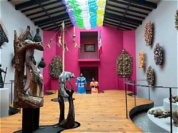

MUSEO
Historia:
Era la casa de Don Joaquín Arcadio Pagaza (1839-1918), poeta, sacerdote y obispo muy famoso en México, nacido en Valle de Bravo. Su casa del siglo XIX la convirtieron en museo para conservar sus cosas.
¿Qué hay adentro?
Sala permanente: Objetos personales de Pagaza, su biblioteca antigua, muebles, fotos de cuando Valle no tenía presa.
2 salas temporales: Ahí es donde viste "Fiesta en el Pueblo" en papel amate. Cada mes cambian: pintura, fotografía, arte mazahua y otomí, alebrijes, catrinas, etc.
Auditorio para 60 personas: hacen conferencias, obras de teatro y talleres de pintura.
Biblioteca pública
